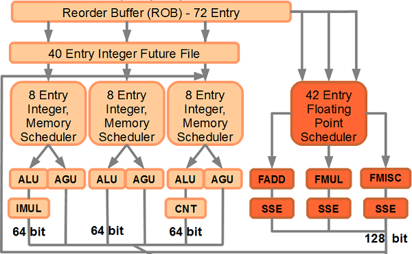

Во всех современных x86 CPU кэши L1 и L2 работают на той же частоте, что и процессорное ядро, но это вовсе не всегда было так (данный вопрос уже поднимался выше). Однако скорость работы с кэшем зависит не только от частоты, но и от ширины шины, с помощью которой он соединён с ядром. Как вы помните, скорость передачи данных является произведением частоты работы шины (количества тактов в секунду) на количество байт, которые передаются по шине за такт. Это количество можно увеличивать за счёт введения технологии DDR (Double Data Rate) и/или за счёт увеличения ширины шины. В случае с кэшем более популярен второй вариант — не в последнюю очередь из-за «пикантных особенностей» DDR, описанных выше. Более того, можно поставить сразу две параллельные шины, передающие данные в разные стороны — т.е. преобразовав шину в двунаправленную (полнодуплексную) удвоенной ширины. Споры о том, какой из подходов лучше (двунаправленная шина, но более узкая в каждом направлении, или однонаправленная широкая) — продолжаются до сих пор, как и множество других споров относительно технических решений, применяемых двумя основными конкурентами на рынке x86 CPU. Ранее под минимально разумной шириной шины кэша принималась разрядность внешней шины самого процессора, т.е. 64 бита. Теперь же большинство новых моделей имеют встроенный многоканальный контроллер памяти, общая эффективная ширина которого — 128 и более бит. Однако внутри процессора ширина шин между ядром и кэшем, а также самими кэшами может быть ещё шире: в большинстве случаев — 256 бит.
Концепции эксклюзивного и не эксклюзивного кэширования очень просты: в случае не эксклюзивного кэша, информация на всех уровнях кэширования может дублироваться. Таким образом, L2 может содержать в себе данные, которые уже находятся в L1I и L1D, а L3 может содержать в себе полную копию всего содержимого L2 (и, соответственно, L1I и L1D). Эксклюзивный кэш, в отличие от не эксклюзивного, предусматривает чёткое разграничение: если информация содержится на каком-то уровне кэша — то на всех остальных она отсутствует. Плюс эксклюзивного кэша очевиден: общий размер кэшируемой информации равен суммарному объёму кэшей всех уровней — а у не эксклюзивного кэша размер кэшируемой информации (в худшем случае) равен объёму самого большого (по размеру и по номеру) уровня кэша. Минус эксклюзивного кэша менее очевиден, но он есть: необходим специальный механизм, который следит за собственно «эксклюзивностью» (например, «удаление» информации из L1 фактически инициирует процесс её копирования в L2).
Не эксклюзивный кэш традиционно использует компания Intel, эксклюзивный (с момента появления процессоров Athlon на ядре Thunderbird) — компания AMD. В целом, мы наблюдаем здесь классическое противостояние между объёмом и скоростью: за счёт эксклюзивности, при одинаковых объёмах L1/L2 у AMD общий размер кэшируемой информации получается больше — но за счёт неё же он работает медленней (задержки, вызванные наличием механизма обеспечения эксклюзивности). Следует заметить, что недостатки не эксклюзивного кэша Intel компенсирует просто, но весомо: наращивая его объёмы. Для топовых процессоров данной компании стал нормой L3-кэш объёмом 8 МБ — но AMD с её 512 КБ L2 на каждое из 2-6 ядер и максимум 6 МБ общего L3 также получает 7-9 МБ за счёт эксклюзивности.
Кроме того, увеличивать общий объём кэшируемой информации за счёт введения эксклюзивной архитектуры кэша имеет смысл только в том случае, когда выигрыш в объёме получается достаточно большим. Для AMD это актуально т.к. у её сегодняшних CPU суммарный объём L1D+L1I равен 128 КБ, а L2 — 512 КБ. Процессорам Intel, у которых оба числа вдвое меньше, введение эксклюзивной архитектуры дало бы намного меньше пользы.
А ещё есть распространённое заблуждение, что архитектура кэша у CPU компании Intel «инклюзивная». На самом деле — нет. Именно НЕ эксклюзивная. Инклюзивная архитектура предусматривает, что на «нижнем» уровне кэша не может находиться ничего, чего нет на более «верхнем». Не эксклюзивная архитектура всего лишь допускает дублирование данных на разных уровнях.
Основная черта всех современных процессоров состоит в том, что они способны запускать на исполнение не только ту команду, которую (согласно коду программы) следует исполнить в данный момент времени, но и другие «вблизи» неё. Приведём простой (канонический) пример. Пусть нам следует исполнить следующую последовательность команд:
Легко заметить, что команды (1) и (2) совершенно независимы друг от друга — они не пересекаются ни по исходным данным (переменные B и C в первом случае, X и Y во втором), ни по месту размещения результата (переменная A в первом случае и Z во втором). Стало быть, если на данный момент у нас есть свободные исполняющие блоки в количестве более одного, данные команды можно распределить по ним, и выполнить одновременно, а не последовательно*. Таким образом, если принять время исполнения каждой команды равным N тактов процессора, то в классическом случае исполнение всей последовательности заняло бы N*3 тактов, а в случае с параллельным исполнением — всего N*2 тактов (так как команду (3) нельзя выполнить, не дождавшись результата исполнения двух предыдущих).
* — разумеется, степень параллелизма не бесконечна: команды могут быть выполнены параллельно только в том случае, когда на данный момент времени есть в наличии соответствующее количество свободных от работы блоков (ФУ), причём именно таких, которые «понимают» рассматриваемые команды. Например, ALU физически неспособно исполнить инструкцию для FPU. Обратное также верно.
На самом деле, всё ещё сложнее. Так, если у нас имеется следующая последовательность:

То очередь исполнения команд процессором будет изменена! Т.к. команды (1) и (3) независимы друг от друга ни по исходным данным, ни по месту размещения результата, они могут быть выполнены параллельно — и будут выполнены параллельно. А вот команда (2) будет выполнена после них (хронологически третьей) — поскольку для того, чтобы результат вычислений был корректен, необходимо, чтобы перед этим была выполнена команда (1). Именно поэтому обсуждаемый в данном разделе механизм и называется «внеочередным исполнением команд» (Out-of-Order Execution или «OoO»): в тех случаях, когда очерёдность выполнения никак не может сказаться на результате, команды отправляются на исполнение не в указанной в программе последовательности, а в той, которая позволяет достичь максимального быстродействия.
Теперь вам должно стать окончательно понятно, зачем современным CPU такое количество однотипных исполняющих блоков: они обеспечивают возможность параллельного выполнения нескольких одинаковых или близких по типу команд, которые в случае с «классическим» подходом к проектированию процессора пришлось бы выполнять так, как они содержатся в исходном коде, одну за другой.
Процессоры, оснащённые механизмом параллельного исполнения нескольких подряд идущих команд, принято называть «суперскалярными». Однако не все суперскалярные процессоры поддерживают внеочередное исполнение. Так, в первом примере нам достаточно «простой суперскалярности» (выполнения двух последовательных команд одновременно) — а вот во втором примере без перестановки команд местами уже не обойтись, если мы хотим получить максимальное быстродействие. Все современные x86 CPU обладают обоими качествами: являются суперскалярными и поддерживают внеочередное исполнение команд — кроме процессора Intel Atom, который сделан с простой внутренней структурой, чтобы быть дешёвым и энергоэффективным одновременно. В то же время, были в истории x86 и «простые суперскаляры», OoO не поддерживающие. Например, классическим десктопным x86-суперскаляром без OoO был Intel Pentium (с или без MMX). Тот же Atom можно с натяжкой считать аналогом «Пентиума», хотя сильно продвинутым и по архитектуре, и по скорости.
Справедливости ради стоит заметить, что никаких заслуг в разработке концепций суперскалярности и OoO нет ни у Intel, ни у AMD, ни у какого-либо иного (в том числе из ныне почивших) производителя x86 CPU. Первый суперскалярный компьютер, поддерживающий OoO, был разработан Сеймуром Креем (Seymour Cray) ещё в 60-х годах XX века. Для сравнения: Intel свой первый суперскалярный процессор архитектуры x86 (Pentium) выпустила в 1993 г., первый суперскаляр с OoO (Pentium Pro) — в 1995 г.; первый суперскаляр с OoO от AMD (K5) увидел свет в 1996 г.. Комментарии, как говорится, излишни…
В любой более-менее сложной программе присутствуют команды условного перехода: «Если некое условие истинно — перейти к исполнению одного участка кода, если нет — другого». С точки зрения скорости выполнения кода программы современным процессором с большим числом подоготовительных стадий и собственно исполнением (так называемый исполнительный конвейер), любая команда условного перехода — воистину бич божий. Ведь до тех пор, пока не станет известно, какой участок кода после условного перехода окажется «актуальным» — его невозможно начать декодировать и исполнять. Для того чтобы как-то примирить концепцию «длинных» конвейеров с командами условного перехода, предназначается специальный блок: блок предсказания ветвлений. Занимается он, по сути, «пророчествами»: пытается предсказать, на какой участок кода укажет команда условного перехода, ещё до того, как она будет исполнена, и сработает ли переход вообще. В соответствии с указаниями «штатного внутриядерного пророка», процессором производятся вполне реальные действия: «напророченный» участок кода загружается в кэш (если он там отсутствует), и начинается декодирование и выполнение его команд. Причём среди выполняемых команд также могут содержаться инструкции условного перехода, и их результаты тоже предсказываются, что порождает целую цепочку из пока не проверенных предсказаний! Разумеется, если блок предсказания ветвлений ошибся, вся проделанная в соответствии с его предсказаниями работа просто аннулируется.
Алгоритмы, по которым работает блок предсказания ветвлений, вовсе не являются шедеврами искусственного интеллекта. Когда процессор впервые встречает условный переход, он пытается предсказать его поведение «по одёжке» — какого типа команда, куда происходит переход (вперёд по ходу исполнения программы или назад — это если он вообще произойдёт) и пр.. Точность такого предсказателя (он называется статическим) невелика. Самое интересное происходит, когда встречается уже знакомый переход. Чтобы его узнать, у предсказателя есть специальная таблица историй переходов, хранящая описание поведения нескольких сотен или тысяч последних обнаруженных в программе команд ветвления вместе с их адресами. Далее уже динамический предсказатель делает заключение о вероятном поведении команды не «по одёжке», а «по уму» — основываясь на детальной накопленной статистике поведения и этой команды перехода, и предыдущих её «коллег», исполненных до неё. Для поддержки этой статистики каждый раз, когда команда перехода доходит до исполнения, её результат попадает в предсказатель, чтобы тот скорректировал свою таблицу — перешли или нет, угадали или нет.
Несмотря на достаточно высокую эффективность алгоритмов, механизмы предсказания ветвлений в современных CPU всё равно постоянно совершенствуются и усложняются — но тут уже речь идёт о борьбе за единицы процентов: например, за то, чтобы повысить эффективность работы блока предсказания ветвлений с 95 процентов до 97, или даже с 97 до 99…
Блок предвыборки данных (Prefetch) очень похож по принципу своего действия на блок предсказания ветвлений — но в данном случае речь идёт не о коде, а о данных. Общий принцип действия такой же: предзагрузчик (префетчер) анализирует запросы к данным, решает, что к некоему участку памяти, ещё не загруженному в кэш или ядро, скоро будет осуществлён доступ — и заранее даёт команду на загрузку данного участка ещё до того, как он понадобится программе. «Умно» (результативно) работающий блок предвыборки позволяет существенно сократить время доступа к нужным данным, и, соответственно, повысить скорость исполнения программы. Он хорошо компенсирует высокую латентность подсистемы памяти, подгружая нужные данные поближе к ядру или сразу в него, и тем самым, нивелируя задержки при доступе к ним, если бы они находились не в кэше, а в основном ОЗУ.
Разумеется, в случае предвыборки неизбежны негативные последствия: загружая ненужные (как позже окажется) данные в кэш, Prefetch вытесняет из него другие (быть может, как раз нужные). Кроме того, за счёт «предвосхищения» операции считывания, создаётся дополнительная нагрузка на контроллер памяти (причём в случае ошибки — совершенно бесполезная).
Алгоритмы Prefetch, как и алгоритмы блока предсказания ветвлений, тоже не блещут интеллектуальностью: как правило, данный блок стремится отследить, не считывается ли информация из памяти с определённым «шагом» (по адресам), и на основании этого анализа пытается предсказать, с какого адреса будут считываться данные далее. Как и в случае с блоком предсказания ветвлений, простота алгоритма вовсе не означает низкую эффективность: в среднем, блок предвыборки чаще «попадает», чем ошибается — это, как и в предыдущем случае, прежде всего связано с тем, что «массированное» чтение данных из памяти, как правило, происходит при исполнении различных циклов.Приложение: генеалогия x86-процессоров от начала и до наших времён
Также, для справки, мы решили включить в данный материал своего рода «генеалогическое древо» всех десктопных x86-процессоров, т.к. оно позволяет проследить некоторые тенденции их развития, а заодно понять, насколько «взаимопроникающим» был процесс их разработки, особенно в самом начале. :)